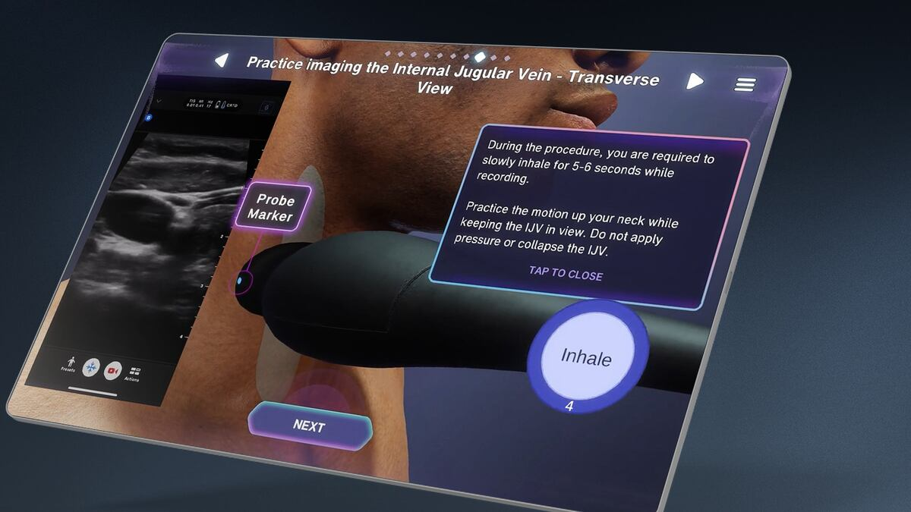

Polaris Dawn Ultrasound Trainer - 2024
Software Engineer | Level Ex

Level Ex, in partnership with SpaceX, KBR, and the Translational Research Institute for Space Health, developed an ultrasound training tool for the astronauts of the Polaris Dawn mission, the first of three missions in the Polaris Program. It is "just-in-time" training that helps astronauts use and monitor their health with medical imaging while in space, where ultrasound is the only imaging device on a spacecraft that can see inside the body.
I was a software engineer on the project, working on the final polish of the experience. It is amazing to think that something I worked on is in space now.